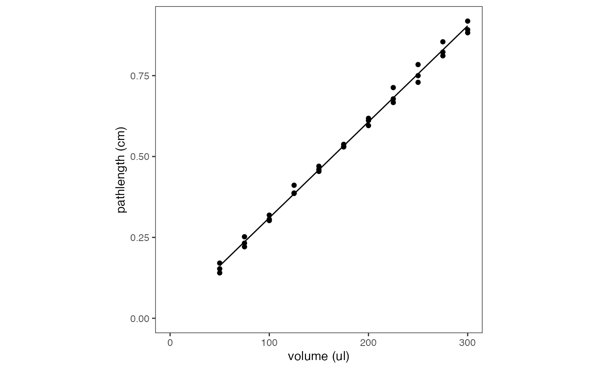

Path length determination is a key step in working out protein
concentrations from absorbance data with
process_absorbance_spectrum().
As absorbance depends on the path length, and microplate readers necessitate that absorbance readings are carried out from bottom to top, the path length of the sample is not fixed as it is in a cuvette or Nanodrop. Instead, it depends on a number of other factors, such as the volume used, the composition of the buffer, and the temperature.
Consider this code from the ‘Getting Started’ vignette: the path
length correction method pl_method, along with three helper
parameters (buffer_used, concentration_used
and temperature_used) need to be specified for path length
estimation.
# Process spectra
processed_data_spectrum <- process_absorbance_spectrum(
# basics
spectrum_csv = "data/example_absorbance_parsed.csv",
subset_rows = TRUE, rows_to_keep = c("A","B"), columns_to_keep = c(1:12),
xrange = c(250,1000),
# path length calcs
pl_method = "calc_blanks",
buffer_used = "TBS", concentration_used = 0.005, temperature_used = 30,
# saving
outfolder = "fp_quantification"
)Estimating Path Length
There are 2 methods for estimating path length in
fpcountr. The first relies on measurements within the
absorbance data, and the second relies on the sample’s volume.
(1) Estimating Path Length Using Infrared Wavelengths (K-Factors)
The path length of a sample in a well may be estimated from its absorbance readings in the infrared range, and the k-factor of the same buffer at the same temperature.
The k-factor of an aqueous buffer is the observed difference between its absorbance at 975 nm and its absorbance at 900 nm.
The path length of a sample may be estimated by taking the ratio of the measured k-factor in the sample vs the known k-factor of the same buffer at 1cm path length. Therefore, in order to calculate path lengths, we need:
- known k-factor of the same buffer at 1cm path length: a reference dataset on k-factors of a range of buffers
- measured k-factor in the sample: data on sample absorbance at 900-975nm, information about the identity of the buffer used, its concentration, and the temperature of the assay
Reference k-factors dataset
fpcountr uses reference datasets from Thermo Fisher.
The first is a dataset of k-factors of a range of buffers:
| buffer | concentration | units | description | kfactor | fold_change |
|---|---|---|---|---|---|
| water | 0.00 | none | Water | 0.173 | 1.0000000 |
| Na_phosphate | 0.10 | M | Na_phosphate_100mM | 0.170 | 0.9826590 |
| NaOH | 0.02 | M | NaOH_20mM | 0.169 | 0.9768786 |
| sulphuric_acid | 0.02 | M | sulphuric_acid_20mM | 0.169 | 0.9768786 |
| TE_buffer | 0.01 | M | TE_buffer_10mM | 0.169 | 0.9768786 |
| NaCl | 0.90 | pc | NaCl_0.9% | 0.168 | 0.9710983 |
| TBS | 0.05 | M | TBS_50mM | 0.166 | 0.9595376 |
| Na_phosphate | 0.08 | M | Na_phosphate_80mM | 0.166 | 0.9595376 |
| Tris-HCl | 1.00 | M | Tris-HCl_1M | 0.157 | 0.9075145 |
| Tween | 0.10 | pc | Tween_0.1% | 0.155 | 0.8959538 |
| sulphuric_acid | 2.00 | M | sulphuric_acid_2M | 0.154 | 0.8901734 |
| DMSO | 1.00 | pc | DMSO_1% | 0.169 | 0.9768786 |
| DMSO | 5.00 | pc | DMSO_5% | 0.159 | 0.9190751 |
| DMSO | 10.00 | pc | DMSO_10% | 0.148 | 0.8554913 |
| EtOH | 5.00 | pc | EtOH_5% | 0.159 | 0.9190751 |
| EtOH | 20.00 | pc | EtOH_20% | 0.129 | 0.7456647 |
| EtOH | 40.00 | pc | EtOH_40% | 0.092 | 0.5317919 |
| MeOH | 5.00 | pc | MeOH_5% | 0.161 | 0.9306358 |
| MeOH | 20.00 | pc | MeOH_20% | 0.133 | 0.7687861 |
| MeOH | 40.00 | pc | MeOH_40% | 0.100 | 0.5780347 |
Notice that not all buffers are represented and we need to pick the
closest match. For our calibrations, we used a buffer consisting of 5 mM
Tris and 15 mM NaCl, so we chose buffer_used = "TBS" and
concentration_used = 0.005 (M).
The second lists how the k-factor changes with temperature:
| temperature | kfactor | fold_change |
|---|---|---|
| 25 | 0.172 | 1.000 |
| 28 | 0.174 | 1.012 |
| 31 | 0.177 | 1.029 |
| 34 | 0.179 | 1.041 |
| 37 | 0.183 | 1.064 |
| 41 | 0.188 | 1.093 |
| 45 | 0.191 | 1.110 |
Run the view_kfactors() function (as is) to get these
datasets printed in the console. Use them to help decide what to add for
buffer_used and what units to use for
concentration_used.
When to use "calc_each" vs
"calc_blanks"
To request path length calculation via this method you have two options:
- Use
pl_method = "calc_each"to estimate pathlength of each well individually. - Use
pl_method = "calc_blanks"to estimate pathlength of all wells from an average of the blank wells. This is usually recommended.
(2) Estimating Path Length Using Sample Volume
To request path length estimation via the volume, use
pl_method = "volume".
The volume method calculates path length using a reference experiment in which a microplate was filled with specified volumes of water (50-300 ul), and the path lengths of each were measured and fitted to a linear model.
